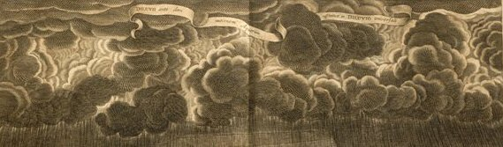

Wednesday, January the 27th, 2010
back to: title, date or indexes

As part of our exciting series Meteorologically Significant Pictures From Pointy Town And Thereabouts, here is what boffins describe as the “standard view” of the sky, if one is looking up into the firmament when standing slap bang next to the horse trough in Chris De Burhg [sic] Square. Apparently, there are occasional days when the sky looks a tiny bit less threatening, but they are few and far between in the span of years allotted to most of us, including tortoises.
Deluge-Vision courtesy of Book Patrol